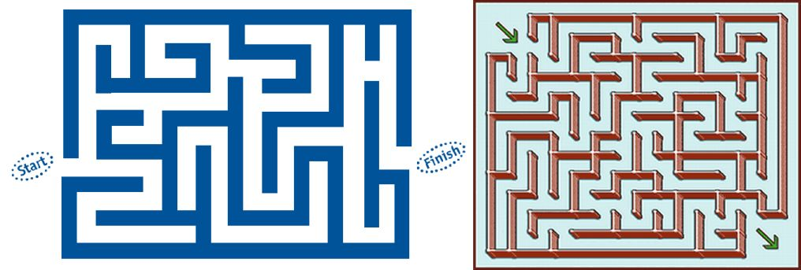

Maze adalah salah satu jenis puzzle yang menuntut sang pemain untuk melakukan perjalanan pada papan puzzle-nya. Pemain bisa saja menelusuri jalannya dengan representasi benda seperti dadu, menggunakan pensil atau token lainnya, namun tidak menutup kemungkinan pemain itu sendiri-lah yang harus menelusuri jalan tersebut. Pada maze, pemain biasanya diharuskan menelusuri jalan dari titik awal (start) sampai titik akhir (finish). Di dalam sebuah maze, jalan yang harus ditelusuri oleh pemain bercabang-cabang dan dirancang agar sulit untuk dinavigasi agar tercipta suatu puzzle yang menantang. Aplikasi dari maze ini banyak sekali, contohnya papan permainan untuk anak-anak maupun keluarga. Bahkan ada maze dalam ukuran besar yang memang dibuat sebagai suatu wahana permainan turis atau sebagai penghias taman saja. Dalam versi digital-nya, maze dapat diaplikasikan pada game ber-genre puzzle, atau hanya sebagai fitur pendukung agar game menjadi lebih menantang dan tidak membosankan.
Sebuah maze biasanya terdiri dari suatu ruangan dan tembok. Tembok inilah yang akan membagi ruangan tersebut menjadi jalan-jalan bercabang yang harus ditelusuri oleh pemain. Dalam pembuatan sebuah maze, yang pertama kali dilakukan adalah mendesain layout dari lintasan yang akan ditempuh dari titik start sampai titik finish, kemudian membuat jalan tambahan yang dibuat bercabang-cabang untuk meningkatkan tingkat kesulitan dari puzzle, kemudian membuat tembok berdasarkan layout lintasan yang telah dibuat dan membuat ruangan untuk ditelusuri oleh pemain sesuai lintasannya. Banyak cara untuk mempermudah kita dalam membuat sebuah maze. Salah satunya adalah menggunakan algoritma pembuat maze (Maze Generation Algorithm), algoritma ini bisa dilakukan manual dengan tangan maupun otomatis dilakukan dan dibuat oleh komputer.